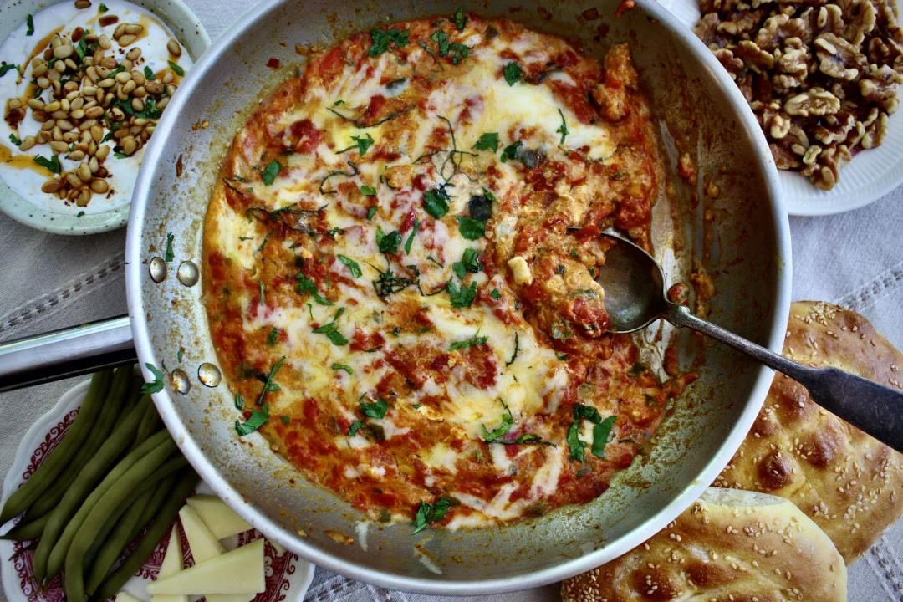

Menemen (Turkish Breakfast Scramble with Tomatoes and Sweet Peppers)

Description
Menemen. What an absolute gem of a breakfast food! Deep, savory flavors created in a matter of minutes. Learn how to make this Menemen (Turkish Breakfast Scramble with Tomatoes and Sweet Peppers) for breakfast, dinner, or as an appetizer for a get-together. Make sure you serve it with some soft, crusty bread to soak up all that flavor!
Menemen is Turkish breakfast dish made of delicious tomatoey pepper sauce, silky scrambled eggs, and cheese. Traditionally it would be eaten and scooped with a bread of some sort, or pide. Alongside the bread, you would find one or two other main dishes, some fresh vegetables (usually tomatoes, cucumbers, and onion), pickles, jams, olives, and cheese. It’s a beautiful assortment of flavors, textures, nutrition, and color. I can’t wait to visit Turkey one day and experience all the authentic flavors of a traditional Turkish breakfast!
Although this version may not be 100% authentic, I wanted to create something with the idea of cooking eggs in a rich tomato-pepper sauce. Since we’ve had so many peppers rolling in on the farm, I decided to use a variety of our mild and spicy roasted peppers as well as roasted tomatoes for additional umami.
Ingredients
- 2 tablespoons of butter
- ½ medium-sized onion, chopped
- 1/2 cup finely chopped sweet pepper (Bell, Anaheim, Hungarian Sweet, etc.), chopped
- 1 jalapeno, minced (optional)
- 3 cloves of garlic, minced
- 2 large ripe tomatoes, chopped
- ⅛ teaspoon paprika
- Salt and pepper to taste
- ½ cup shredded mozzarella, divided in halves
- 2 large eggs
- Parsley and mint for garnish
- Soft, crusty bread, or pide for serving
Steps
- If you don’t mind the tomato skins, feel free to skip this part! Place the tomatoes into a pot of boiling water for 30 seconds. Then, place into a bowl of ice water to cool down and prevent further cooking. The tomatoes should then be very easy to peel and chop. Set aside.
- In a medium-size deep skillet, over medium heat, toss in the butter. Once melted, add in the red onion and pepper. Cook for 10 minutes, or until very soft.
- Toss in the garlic and cook for 1 more minute.
- Then, stir in the chopped tomatoes and cook for 5 minutes, stirring occasionally.
- Uncover, and mash the tomatoes with the back of the spoon. Season with smoked paprika, salt, and pepper before adding in ¼ cup of the mozzarella.
- Stir the cheese a few times and add in the eggs.
- Turn the heat down to medium-low and stir everything around just until combined. Cook for 3-5 more minutes or until the eggs are cooked to your preference.
- Sprinkle on the remaining ¼ cup of cheese and let this melt before serving with a lovely loaf of soft, crusty bread. Enjoy!
Nutrition
- Calories: 259
- Carbohydrates: 15.1g
- Cholesterol: 220mg
- Fat: 18.4g
- Fiber: 3.9g
- Protein: 11.2g
- Saturated fat: 9.7g
- Sodium: 206mg
- Sugar: 8.3g